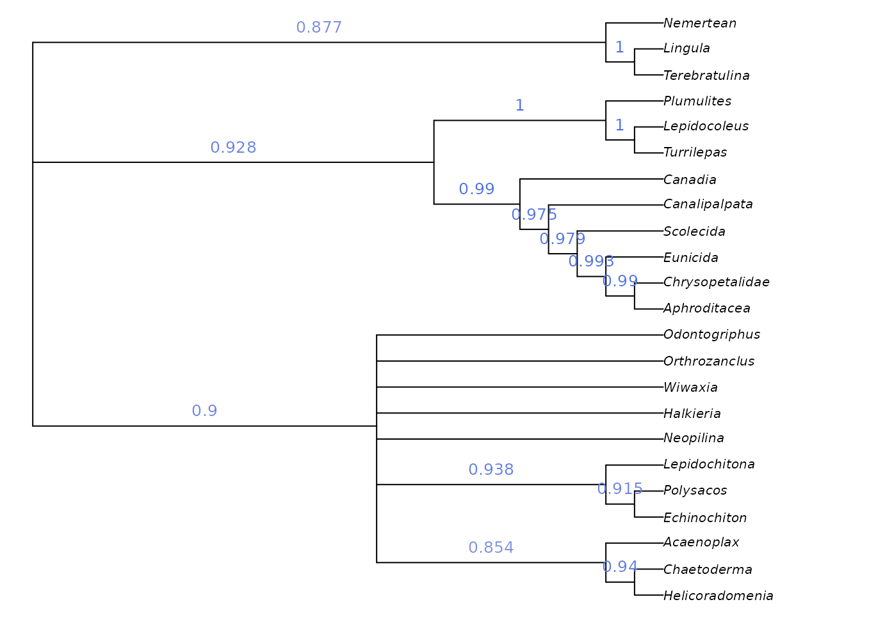

Getting started: Simple tree searches
Martin R. Smith
2026-02-15
Source:vignettes/tree-search.Rmd
tree-search.Rmd“TreeSearch” is an R package that allows, among other things, parsimony search on morphological datasets that contain inapplicable data, using the algorithm proposed by Brazeau, Guillerme and Smith (2019) and implemented in the ‘MorphyLib’ C library (Brazeau et al., 2017) (details).
Getting started
A companion vignette gives details on installing the package and getting up and running.
Launch an interactive ‘app’ in your browser by typing
TreeSearch::EasyTrees() at the R / RStudio command
line.
This will allow you to load data from a file, modify search settings, and explore the distribution of most parsimonious trees in tree space.

View a consensus tree and explore the position of rogue taxa (Smith, 2022b):

Explore the distribution of trees (whether found by search or loaded from file) in tree space (Smith, 2022a), and evaluate search progress (Whidden & Matsen, 2015):

Map characters on a chosen tree, using character and taxon notes imported from a Nexus file, if present. (This is designed to be interoperable with MorphoBank matrices.)

Trees can be saved as images, or in Nexus/Newick for further analysis.
Command line tree search
You can also run tree searches using the R command line. Once installed, load the “TreeSearch” package into R using
You can load your own dataset, but for now, we’ll use the Vinther et al. (2008) dataset that comes bundled with “TreeSearch”.
This dataset is small enough that it runs reasonably quickly, but its phylogenetic signal is obscure enough that it can require Ratchet searches to escape from local optima.
vinther <- TreeSearch::inapplicable.phyData[["Vinther2008"]]
# Set a random seed so that random functions in this document are reproducible
RNGversion("3.5.0")## Warning in RNGkind("Mersenne-Twister", "Inversion", "Rounding"): non-uniform
## 'Rounding' sampler used
set.seed(0)We can conduct a basic parsimony search with:
bestTrees <- MaximizeParsimony(vinther)It can be instructive to inspect the progress of tree search.
firstHit <- attr(bestTrees, "firstHit")
firstHit## seed start ratch1 ratch2 ratch3 ratch4 ratch5 ratch6 ratch7 final
## 0 27 0 0 15 2 6 0 1 0Here, we can see that many of the earliest ratchet iterations were finding optimal trees that had not previously been visited. Later iterations found progressively fewer new trees, suggesting that the search is likely to have been effective.
Advanced users might wish to visualize the progress of tree search by mapping tree space:
distances <- TreeDist::ClusteringInfoDistance(bestTrees)
searchStages <- length(firstHit)
map <- cmdscale(distances, k = 3)
cols <- hcl.colors(searchStages, alpha = 0.8)
par(mar = rep(0, 4))
TreeDist::Plot3(map,
col = cols[rep(seq_along(firstHit), firstHit)],
pch = 16, cex = 2,
axes = FALSE, xlab = "", ylab = "", asp = 1)
TreeTools::MSTEdges(distances, plot = TRUE, map[, 1], map[, 2],
col = "#00000030", lty = 2)
legend("topright", names(firstHit), col = cols, pch = 16, bty = "n")
A quick glance suggests that early ratchet iterations captured a large part of the diversity of optimal trees, and that iterations aren’t getting stuck in local optima – though conscientious users will ensure that the mapping of tree space is meaningful and adequate to detect structure before making any firm conclusions (Smith, 2022a).
To be thorough, we might consider continuing the search for a little longer, fine-tuning the search parameters:
bestTrees <- MaximizeParsimony(vinther, tree = bestTrees,
ratchIter = 6L,
tbrIter = 4L,
finalIter = 3L,
maxHits = 80L)As it happens, the best tree for this dataset has a score of 79 under equal weights parsimony.
We can plot the best tree(s) that we’ve found, and check its parsimony score (length):

TreeLength(bestTrees[[1]], vinther)## [1] 79Evaluating clade support
We might be interested in labelling clades with their frequency among the sampled most-parsimonious trees:
par(mar = rep(0.25, 4), cex = 0.75) # make plot easier to read
majCons <- ape::consensus(bestTrees, p = 0.5)
splitFreqs <- TreeTools::SplitFrequency(majCons, bestTrees) / length(bestTrees)
plot(majCons)
TreeTools::LabelSplits(majCons, round(splitFreqs * 100), unit = "%",
col = TreeTools::SupportColor(splitFreqs),
frame = "none", pos = 3L)
This approach is a sensible way to analyse clade credibility when the frequency of a split corresponds to its probability, as is the case in a Bayesian posterior sample of trees. This is not the case, however, in sets of most parsimonious trees.
Imagine if our set of most parsimonious trees was expanded to include a single additional tree in which Halkieria was sister to the brachiopod Terebratulina (close to the outgroup). We would then be in a situation in which Halkieria may be a brachiopod – in which case a single interpretation of molluscan relationships is most parsimonious – or may be a mollusc, in which case its mosaic of characters can be reconciled with molluscs in a number of equally-parsimonious ways. Neither interpretation should be considered more or less plausible, even if we observe more unique most parsimonious trees in which Halkieria is a mollusc simply because of the greater resultant uncertainty in the placement of taxa such as Odontogriphus and Wiwaxia.
A more instructive measure of clade support can be generated using
Jackknife resampling. The Resample() manual
page has suggestions for appropriate numbers of replicates and
search intensity, and instructions for calculating bootstrap support;
the code here gives a quick-to-run jackknife framework that can be
adapted to the requirements of a particular dataset.
nReplicates <- 10
jackTrees <- lapply(logical(nReplicates), function (x)
Resample(vinther, bestTrees, ratchIter = 0, tbrIter = 1, maxHits = 4,
verbosity = 0)
)
strict <- ape::consensus(bestTrees, p = 1)
par(mar = rep(0, 4), cex = 0.8)
# Take the strict consensus of all trees for each replicate
JackLabels(strict, lapply(jackTrees, ape::consensus)) -> XX
Jackknife and bootstrap support values give an indication of the volume of data that supports each node, but don’t necessarily indicate whether the data are unanimous on the existence of a clade: a high bootstrap support value could indicate a large number of characters supporting a clade, and an only slightly smaller number of characters contradicting it.
“TreeSearch” implements a number of concordance measures that aim to indicate whether a dataset is unanimous or divided in support of a grouping, independently of the method of tree reconstruction.
concordance <- QuartetConcordance(strict, vinther)
# Alternative measures:
# concordance <- ClusteringConcordance(strict, vinther)
# concordance <- PhylogeneticConcordance(strict, vinther)
par(mar = rep(0, 4), cex = 0.8)
plot(strict)
TreeTools::LabelSplits(strict, signif(concordance, 3),
col = TreeTools::SupportColor(concordance / max(concordance)),
frame = "none", pos = 3L)
Exploring taxon stability
Measure of clade support can only captures one aspect of the uncertainty in a set of trees. Often one “rogue” taxon with an uncertain position can mask agreement in the relationships of other taxa (Smith, 2022b). The potential impact of rogue taxa can be explored by colouring individual tips according to their stability in the tree set:
par(mar = rep(0, 4), cex = 0.8)
plot(strict, tip.color = Rogue::ColByStability(bestTrees))
Would removing an unstable taxon reveal hidden support for relationships at the base of Mollusca? We can test to see whether the removal of a taxon from a summary tree is justified using:
Rogue::QuickRogue(bestTrees, p = 1)## num taxNum taxon rawImprovement IC
## 1 0 <NA> <NA> NA 154.5491
## 2 1 21 Wiwaxia 14.32221 168.8713In this case, dropping Wiwaxia would improve the resolution of the strict consensus by enough to justify the loss of the information regarding its own position (a net gain of 14.3 bits). The most informative single summary tree is thus provided by:
par(mar = rep(0, 4), cex = 0.8)
noWiwaxia <- lapply(bestTrees, TreeTools::DropTip, "Wiwaxia")
plot(ape::consensus(noWiwaxia), tip.color = Rogue::ColByStability(noWiwaxia))
This reveals that all trees agree that Halkieria and Orthrozanclus are closer to aculiferan molluscs than Odontogriphus and Neopilina, a fact masked in the strict consensus due to the uncertain position of Wiwaxia.
We can see where Wiwaxia would plot on this tree using:
Brighter greens indicate that more trees contained Wiwaxia in this position.
More details on rogue taxon identification are available in the package “Rogue”.
Implied weighting
Equal weights produces trees that are less accurate and less precise than implied weights (Smith, 2019); equally weighted analysis should never be conducted without also considering the results of implied weights (Goloboff, 1993, 1997), ideally under a range of concavity constants (cf. Smith & Ortega-Hernández, 2014).
Implied weights can be activated by simply specifying a value of the concavity constant, k:
iwTrees <- MaximizeParsimony(vinther, concavity = 10)
par(mar = rep(0.25, 4), cex = 0.75) # make plot easier to read
plot(ape::consensus(iwTrees))
Note that we recommend a default value of 10, somewhat higher than the default of 3 in TNT; this low default gives poorer results in many settings (Goloboff et al., 2018; Smith, 2019). Better still is to use multiple values and compare the results, perhaps in Tree space. Even better (?) is to use profile parsimony.
Constraining a search
It is sometimes legitimate to insist that trees must contain a certain clade. Doing so reduces the number of tree rearrangements that are considered, and can this speed up tree search.
“TreeSearch” supports soft constraints, which can be specified using
a separate Nexus file, or by creating a phyDat object in R.
Constraints are effectively phylogenetic characters; only trees on which
each such character fits perfectly will be considered. The position of
taxa not listed in a constraint will not be constrained.
MaximizeParsimony() will attempt to find a starting tree
that satisfies the constraints, but if it cannot, it may be necessary to
specify one manually – perhaps after checking that no constraints are
contradictory.
Here’s a simple example on six taxa that enforces the bipartition ab | cdef:
library("TreeTools", quietly = TRUE)
constraint <- MatrixToPhyDat(c(a = 1, b = 1, c = 0, d = 0, e = 0, f = 0))
characters <- MatrixToPhyDat(matrix(
c(0, 1, 1, 1, 0, 0,
1, 1, 1, 0, 0, 0), ncol = 2,
dimnames = list(letters[1:6], NULL)))
plot(MaximizeParsimony(characters, constraint = constraint,
verbosity = -1)[[1]])
Here’s a more complex example that imposes the splits
ab | cef and abcd | ef, whilst allowing
g to plot anywhere on the tree:
characters <- MatrixToPhyDat(matrix(
c(0, 0, 1, 1, 1, 1, 1,
1, 1, 1, 1, 0, 0, 0), ncol = 2,
dimnames = list(letters[1:7], NULL)))
constraint <- MatrixToPhyDat(matrix(
c(0, 0, 1, "?", 1, 1,
1, 1, 1, 1, 0, 0), ncol = 2,
dimnames = list(letters[1:6], NULL)))
plot(MaximizeParsimony(characters, constraint = constraint,
verbosity = -1)[[1]])Constraints can also be loaded from a Nexus file with
constraint <- TreeTools::ReadAsPhyDat("constraint_file.nex").
Where next?
-
Search for trees using
- standard parsimony (corrected for inapplicable data)
- profile parsimony
- custom optimality criteria
Explore the distribution of optimal trees in mappings